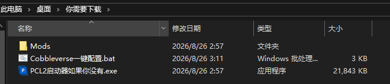
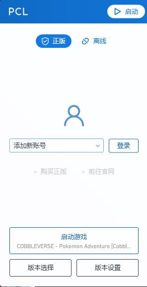
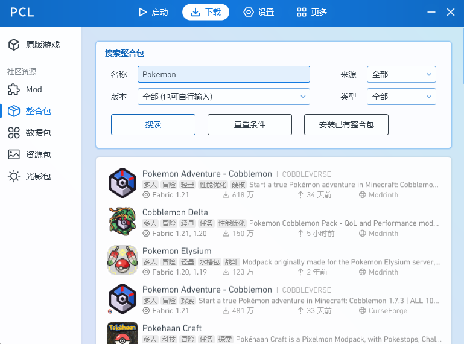
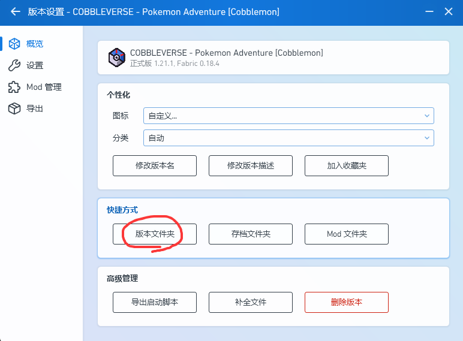
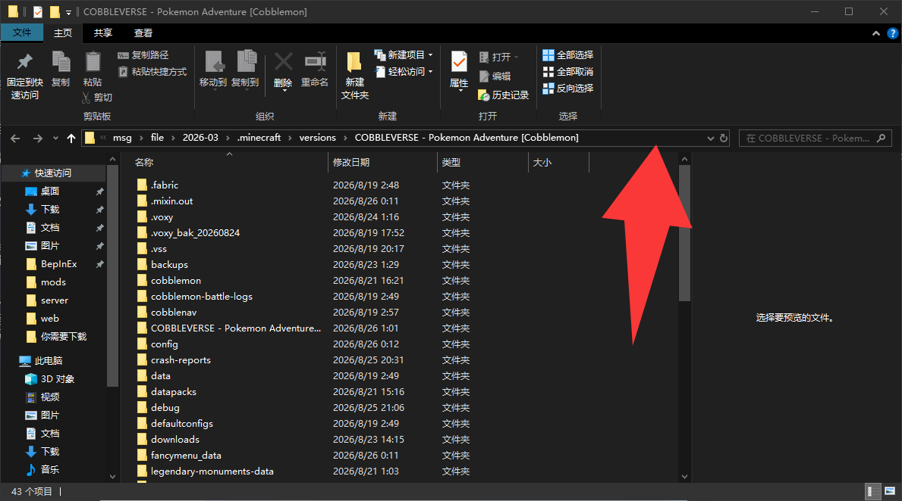

📦 INSTALLATION GUIDE
从零开始加入傻鸟宝可梦 SMP
跟着下面 9 步走，5 分钟搞定！有正版账号和没有正版都能玩～
STEP BY STEP
安装步骤
按顺序一步一步来，每一步都有截图参考
1
2
解压压缩包
下载完是个压缩包，右键解压（推荐用 7-Zip，或者直接用 Windows 自带的「全部解压缩」也行）：
👀 先预告一下：下面这张图是给后面「一键配置」那步用的，现在先不用管它～

3
打开 PCL2 启动器
解压后进文件夹，双击打开「PCL2启动器如果你没有.exe」（如果你电脑已经装了 PCL2 就跳过这步）：
4
登录你的账号
有正版：点「登录」，浏览器会自动打开，把提示的代码粘贴进去，然后正常登录你的 Minecraft 正版账号。
没有正版：点「离线」，输入你的游戏昵称（用户名）就行：

5
下载 Cobbleverse 整合包
点上方「下载」按钮 → 「整合包」→ 搜索框输入 Pokemon Adventure → 第一个选项就是 Cobbleverse 整合包，安装最新版本（1.7.42）：

6
找到版本文件夹
回到「启动」页 → 点「版本设置」→ 点「版本文件夹」按钮，会打开整合包的文件夹：

7
复制文件夹地址
点地址栏空白处，全选复制文件夹地址（右键 → 复制，或者 Ctrl+C）：

8
运行一键配置
打开「Cobbleverse一键配置.bat」，把刚才复制的地址粘贴进去回车。它会自动帮你：复制模组、把音乐音量调到 20%、自动添加服务器：
shaniao.usga.me
📍 找不到这个 bat？回到步骤2解压出来的文件夹里找（就是上面那张图的样子）～
9
进服开玩！
打开游戏 → 多人游戏 → 服务器列表里已经有「傻鸟宝可梦 SMP」了，双击进去就能开玩！遇到问题随时来群里问～
TIP
小提示
🎧 如果进服后觉得音乐太吵，音量已经帮你调好啦（20%）；想再调可以在游戏里 设置 → 音乐和声音 里改。
🌐 服务器地址：
❓ 卡在哪一步了？截图发群里，大家帮你解决！